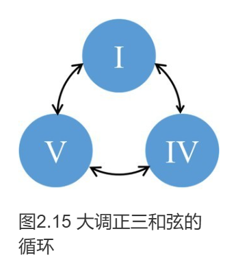

第二章 大调和声
2.2 大调的正三和弦
正三和弦及其功能
很多人觉得编配和声、即兴伴奏很神秘，充满各种奇怪符号和神奇方法。其实，它的基础就是我们已经熟悉的调内七个和弦。
正如上章所说，调就像一个社会组织，每个音、每个和弦都有不同的地位，发挥各自的作用。在古典和声中，这些具体的地位与作用形成了一种固定的模式，称作功能（Function），由此建立起功能和声（Functional harmony）理论。比如C大调的七个三和弦，它们的关系好比一个后宫：
C作为调的主音，它的和弦当然也是最重要的。每个大调的I级和弦都是该调的主和弦（Tonic chord，T），是和声的中心，其作用叫做主功能（Tonic function）。在调性体系下，主和弦的组成音也是所有音中最稳定的，以主音为首，其他各音按照距离，就近趋向于这三个音。其他和弦根据组成音的具体情况，产生各自不同趋向性（Tendency），这便是和声功能的根源所在。不过需要注意，这种趋向性只是由调性产生的趋势，只表示稳定性的总体规律，并非强制要求，实际音乐中不需要严格遵循，例如4不一定进行到3，2不一定进行到1。
第二把交椅是大调第V级，C大调中就是G和弦，封号叫属和弦（Dominant chord，D），代表属功能（Dominant function）。大调5级音又称属音（Dominant），位于主音上方的纯五度（下方纯四度）。属和弦三个音都有朝向主音的倾向，尤其是7级音只与主音相差半音，在调中最不稳定，趋向性尤为显著，使属和弦强烈趋向主和弦，对主和弦有“拱卫”的作用，可谓调中的“首辅”。虽然中文称为“属”，但属音、属和弦在调中占据主导，地位仅次于主音、主和弦，英语使用的“Dominant”含义显然更加贴切。
第4级音F正好与属音相对，在主音下方纯五度（上方纯四度），所以叫做下属音（Subdominant），IV级和弦F叫做下属和弦（Subdominant chord，S），具有下属功能（Subdominant function）。与属和弦相比，下属和弦的趋向性较弱、稳定性略高，地位在调中排行第三。
I IV V这三个和弦最重要，合称正三和弦（Primary chords），正三和弦构成了大调和声最基础的骨架。
| 级数 | 名称 | 功能 | 关键词 |
|---|---|---|---|
| I | 主和弦 (Tonic) | 主功能 (Tonic function) | 稳定、中心 |
| IV | 下属和弦 (Subdominant) | 下属功能 (Subdominant function) | 运动、发展 |
| V | 属和弦 (Dominant) | 属功能 (Dominant function) | 紧张、趋向 |
和声进行的基本规律
和弦按照一定的关系逻辑前后衔接，叫做和声进行（Progression）或序进。在现代音乐中，正三和弦可以灵活使用，构成下图这样的循环：

大调进行的最基本模式是从I级开始，顺时针依次经过IV、V，最后回到I，遍历了主、下属、属三个功能，用到了一个调所有的音，所以叫做完全功能循环。在C大调中就是：C — F — G — C
请演奏或试听这条进行，体会一下它的色彩和感觉。
C-F-G-C 和声进行
我们可以把这个过程想象成一次短暂的旅行，每个和弦都扮演着独特的角色：
主功能 (I) - 稳定： 作为调的中心和起点，给人安心的感觉，是所有和声进行渴望回归的“家”。
下属功能 (IV) - 运动： 音乐从“家”出发，开始发展，张力逐渐积累，是连接稳定与紧张的关键桥梁。
属功能 (V) - 紧张： 音乐的戏剧性达到最强，制造出一种迫切想要“回家”的强烈倾向。
回归主和弦 (I) - 解决： 紧张感最终得到释放，音乐回归稳定，产生一种满足和完满的“解决感”。
因此，I—IV—V—I 循环是古典和声中最经典的进行之一，它完整地展示了从 稳定 → 发展 → 紧张 → 解决 的全过程，这也是功能和声理论的核心。